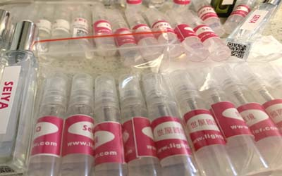
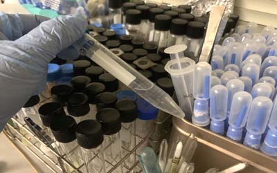

| 1.結核分枝桿菌結核病全球20多億人(1/3人口)曾感染攜帶 |
| 2. 人類免疫缺陷病毒: AIDS, 全球之年死亡率最高, 達300萬人以上,在2022年初台灣感染者近4.4萬,男性佔92%多,女性佔近8% |
| 3. 痢疾桿菌: 細菌性痢疾, 全球之年新發病例數達27億以上. |
| 4. 瘧原蟲: 瘧疾. |
| 5. B肝病毒: B型肝炎. |
| 6. 麻疹病毒: 麻疹. |
| 7. 登革熱病毒: 登革熱, 目前無有效疫苗. |
| 8. 流感病毒: 流感. 禽流感, 機乎全球全部人口曾感染.攜帶. |
| 9. 黃熱病毒: 黃熱病. 10. 塵螨: 過敏. |
| 11. COVID-19新冠肺炎:自2020年起,目前全球染疫者已達3.3億,造成死亡556萬.以及數百萬具後遺症之病人,其病毒不斷變種原本全體免疫理論在此也失去精準,疫苗保護力也不斷被突破,雖然有可能成為流感化,但也有可能有其它變數 |

| 綠膿桿菌引響肺部泌尿道常見於院內感染,在柴油航燃中仍能生長,沙眼衣原體,麻瘋桿菌,痤瘡丙酸桿菌,青春痘梅毒螺旋體,炭疽桿菌, MRSA(抗藥性金黃色葡萄球菌), VRE(抗萬古黴素腸球菌,肺炎鍊球菌 ,幽門螺旋菌(十二指腸潰瘍), 立克次體(斑疹傷寒), 奈瑟菌(淋病.結膜.肺炎), 退伍軍人桿菌(肺炎), 霍亂弧菌, 鼠疫桿菌(黑死病), 大腸桿菌, 傷寒桿菌, 肺炎黴漿菌, 肺炎披衣菌, 白喉棒狀桿菌, 破傷風桿菌, 百日咳桿菌. |
| 綠膿桿菌引響肺部泌尿道常見於院內感染,在柴油航燃中仍能生長,沙眼衣原體,麻瘋桿菌,痤瘡丙酸桿菌,青春痘梅毒螺旋體,炭疽桿菌, MRSA(抗藥性金黃色葡萄球菌), VRE(抗萬古黴素腸球菌,肺炎鍊球菌 ,幽門螺旋菌(十二指腸潰瘍), 立克次體(斑疹傷寒), 奈瑟菌(淋病.結膜.肺炎), 退伍軍人桿菌(肺炎), 霍亂弧菌, 鼠疫桿黑死病), 大腸桿菌, 傷寒桿菌, 肺炎黴漿菌, 肺炎披衣菌, 白喉棒狀桿菌, 破傷風桿菌, 百日咳桿菌. |
| 朊毒體(牛腦海綿狀病BSE.狂牛症), 擬病毒(D肝), |
| 黴菌(黃麴毒素), 癬類.阿米巴原蟲(阿米巴痢疾), 鞭毛蟲.血吸蟲, 豬肉條蟲, 蟠尾絲蟲, 廣州管圓線蟲. |